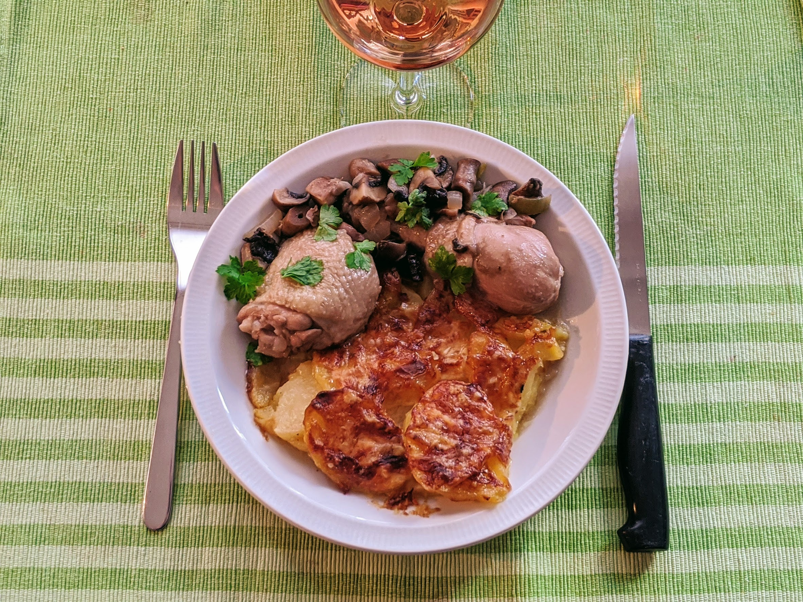

Gratin dauphinois

Ici avec du [coq au vin rosé](CoqAuVinRose.html)
Pour 5-6 personnes :
- 1,5 kg de patates
- Deux gousses d'ail
- 30cL de crème
- Sel, poivre, muscade
- 100g de beurre
- 1L de lait
- Gruyère râpé
- Éplucher, laver et couper les patates en rondelles fines DANS CET ORDRE (ne pas laver après les avoir coupées).
- Faire préchauffer le four thermostat 6 (180° environ).
- Mettre dans une casserole le lait, du sel, du poivre, de la muscade, porter à ébullition et y plonger les pommes de terre une quinzaine de minutes max.
- Beurrer un plat à four, disposer les rondelles de patates dessus, rajouter la crème, disposer quelques noix de beurre et saupoudrer de gruyère râpé.
- Le mettre dans le four pendant une cinquantaine de minutes, servir bien chaud (laisser dans le four une fois la cuisson terminée si besoin).